Reliability distributions
Birnbaum-Saunders
The Birnbaum-Saunders distribution
[example] is defined by the pdf
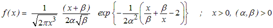
where
alpha and
beta are shape parameters, Birnabaum and Saunders (1969). In the BUGS language it is used as
x ~ dbs(alpha, beta)Burr X
The Burr X distribution
[example] is defined by the pdf
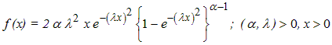
where
alpha is a shape parameter and
lambda is a scale parameter, Surles and Padgett (2005). In the BUGS language it is used as
x ~ dburrX(alpha, lambda)Burr XII
The Burr XII distribution
[example] is defined by the pdf
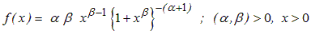
where
alpha and
beta are shape parameters, Klugman et al. (2004). In the BUGS language it is used as
x ~ dburrXII(alpha, beta)Exponential Power
The Exponential power distribution
[example] is defined by the pdf
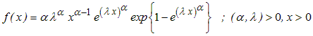
where
alpha is a shape parameter and
lambda a scale parameter, Smith and Bain (1975). In the BUGS language it is used as
x ~ dexp.power(alpha, lambda)Exponentiated Weibull
The Exponentiated Weibul distribution
[example] is defined by the pdf
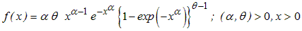
where
alpha and
theta are shape parameters, Mudholkar and Srivastava (1993). In the BUGS language it is used as
x ~ dexp.weib(alpha, theta)Extended Exponential
The Extended Exponential distribution
[example] is defined by the pdf
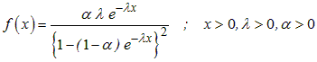
where
alpha is a shape parameter and
lambda is a tilt parameter, Marshall and Olkin (1997, 2007). In the BUGS language it is used as
x ~ dext.exp(alpha, lambda)Extended Weibull
The Extended Weibull distribution
[example] is defined by the pdf
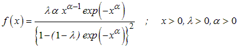
where
alpha is a shape parameter and
lambda is a tilt parameter, Marshall and Olkin (1997, 2007). In the BUGS language it is used as
x ~ dext.weib(alpha, lambda)Flexible Weibull
The Flexible Weibull distribution
[example] is defined by the pdf
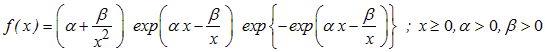
where
alpha and
beta are shape parameters, Bebbington et al. (2007). In the BUGS language it is used as
x ~ dflex.weib(alpha, beta)Generalized Exponential
The Generalized Exponential distribution
[example] is defined by the pdf
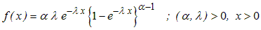
where
alpha is a shape parameter and
lambda is a scale parameter, Gupta and Kundu (1999, 2001). In the BUGS language it is used as
x ~ dgen.exp(alpha, lambda)Generalized Power Weibull
The Generalized Power Weibull distribution
[example] is defined by the pdf
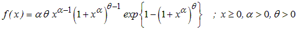
where
alpha and
theta are shape parameters, Nikulin and Haghighi (2006). In the BUGS language it is used as
x ~ dgp.weib(alpha, theta)Gompertz
The Gompertz distribution
[example] is defined by the pdf
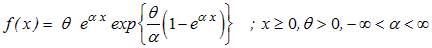
where
alpha and
theta are shape parameters, Marshall and Olkin (2007). In the BUGS language it is used as
x ~ dgpz(alpha, theta)Gumbel
The Gumbel distribution
[example] is defined by the pdf
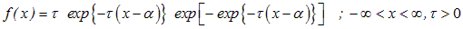
where
alpha is a location parameter and
tau is a scale parameter, Marshall and Olkin (2007). In the BUGS language it is used as
x ~ dgumbel(alpha, tau)Inverse Gaussian
The Inverse Gaussian distribution
[example] is defined by the pdf
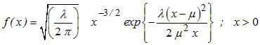
where
mu is a location parameter and
lambda is a scale parameter, Chhikara and Folks (1977). In the BUGS language it is used as
x ~ dinv.gauss(mu, lambda)Inverse Weibull
The Inverse Weibull distribution
[example] is defined by the pdf
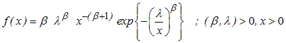
where
beta is a shape parameter and
lambda is a scale parameter, Jiang and Murthy (2001). In the BUGS language it is used as
x ~ dinv.weib(beta, lambda)Linear Failure Rate
The Linear Failure Rate distribution
[example] is defined by the pdf
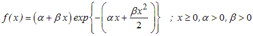
where
alpha and
beta are shape parameters. Bain (1974). In the BUGS language it is used as
x ~ dlin.fr(alpha, beta)Logistic Exponential
The Logistic Exponential distribution
[example] is defined by the pdf
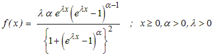
where
alpha is a shape parameter and
lambda is a scale parameter, Lan and Leemis (2008). In the BUGS language it is used as
x ~ dlogistic.exp(alpha, lambda)Log-logistic
The Log-Logistic distribution
[example] is defined by the pdf
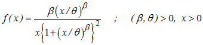
where
beta is a shape parameter and
theta is a scale parameter, Lawless (2003). In the BUGS language it is used as
x ~ dlog.logis(beta, theta)Log-Weibull
The Log-Weibull distribution
[example] is defined by the pdf
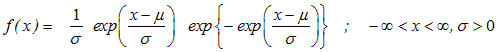
where
mu is a location parameter and
sigma is a scale parameter, Murthy et al. (2004). In the BUGS language it is used as
x ~ dlog.weib(mu, sigma)Modified Weibull
The Modified Weibull distribution
[example] is defined by the pdf
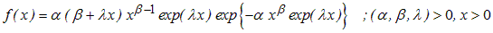
where a
lpha and beta are shape parameters and
lambda is a scale parameter, Lai et al..(2003). In the BUGS language it is used as
x ~ dweib.modified(alpha, beta, lambda)